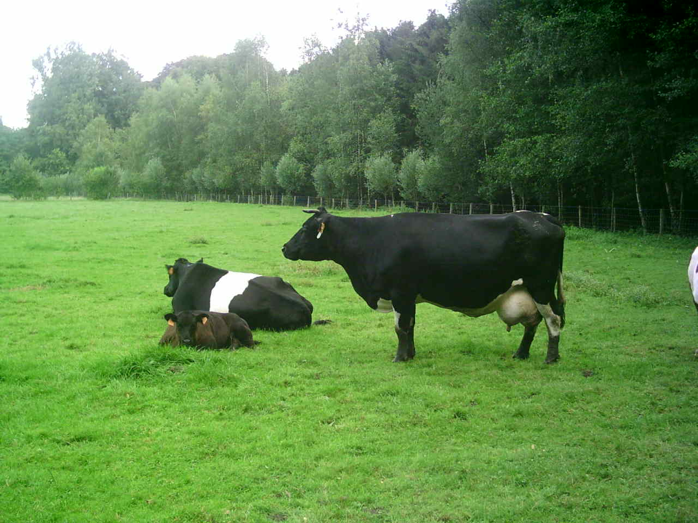

Waar leven koeien?
De leefomgeving van koeien, ook wel bekend als de koeienstal of de weide, is van cruciaal belang voor het welzijn en de gezondheid van deze dieren. Koeien zijn van nature grazers en gedijen goed in een omgeving die voldoende ruimte, voedsel, water, beschutting en comfort biedt.
In de moderne landbouw worden koeien vaak gehouden in stallen of op weiden, afhankelijk van verschillende factoren zoals het weer, seizoen, beschikbare ruimte en het type landbouwpraktijk. Een goed ontworpen stal biedt beschutting tegen extreme weersomstandigheden, zoals hitte, kou, regen of wind, en biedt voldoende ventilatie om een gezonde luchtstroom te behouden.
Weiden spelen ook een essentiële rol in het leven van koeien. Ze voorzien de dieren van natuurlijk gras en andere planten, wat hun dieet aanvult en hen de mogelijkheid biedt om te grazen, te bewegen en te socialiseren. Het belang van voldoende ruimte en groen grasland voor koeien kan niet genoeg worden benadrukt, omdat het hun natuurlijke gedrag ondersteunt en bijdraagt aan hun welzijn.
Hygiëne in de leefomgeving van koeien is ook van groot belang. Schone stallen of weiden verminderen het risico op ziektes en infecties. Boeren besteden veel aandacht aan het regelmatig reinigen van stallen, het verwijderen van mest, het vervangen van strooisel en het verstrekken van voldoende schoon drinkwater.
Het welzijn van koeien is de laatste jaren steeds belangrijker geworden in de landbouw. Boeren streven ernaar om niet alleen te voldoen aan de basisbehoeften van de dieren, maar ook om een omgeving te creëren die hun natuurlijke gedrag ondersteunt en hen in staat stelt om een gezond en gelukkig leven te leiden. Dit omvat het bieden van voldoende ruimte, goede voeding, gezondheidszorg en een comfortabele leefomgeving.